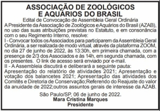

Convocação para Assembleia Anual 2022

A Presidente da Associação de Zoológicos e Aquários do Brasil (AZAB), no uso das suas atribuições previstas no Estatuto, e em consonância com o seu Regimento Interno, resolve:
I – Convocar todos os Associados para participarem da Assembleia Geral Ordinária, a ser realizada de modo virtual, através da plataforma ZOOM, no dia 27 de junho de 2022, às 13:30h, em primeira chamada, com a presença de 2/3 dos Associados e às 14h, em segunda chamada, com os presentes. O link de acesso será enviado por e-mail.
II – A Assembleia discutirá e deliberará a seguinte pauta: Apresentação do relatório de atividades 2021; Apresentação e votação dos balancetes 2021; Apresentação das atividades dos Comitês e Diretoria de Conservação; Referendo do Reajuste do valor da anuidade de 2022; Outros assuntos gerais de interesse da AZAB.
O Edital de publicação pode ser conferido no arquivo anexo: Ipiranga News – AZAB 2022
Fique por dentro
Acompanhe a AZAB nas redes sociais e não perca nenhuma novidade.